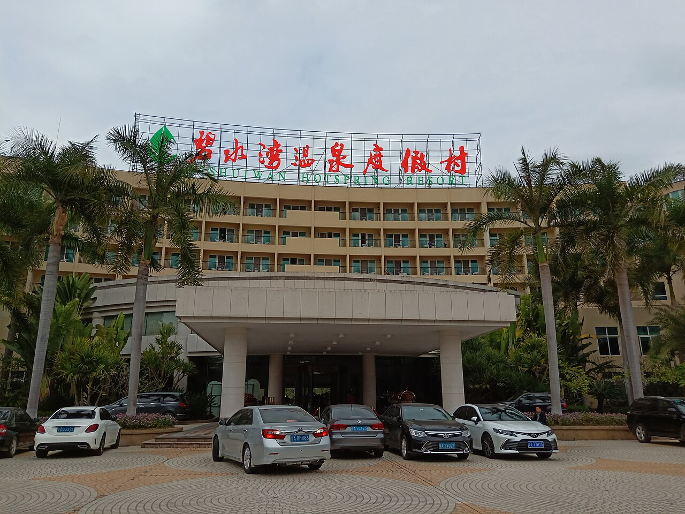

♨️ 东方山水·温泉小镇
仿古温泉 · 妈妈泡汤主场
30+泡池仿古建筑乐园旁

实景照片 · 来源 Wikimedia Commons（CC协议）
← 返回主计划
位置与交通
- 位置：东方山水乐园度假区内（与水之王国/山之王国相邻）
- 距金沙酒店：同度假区，步行/短驱即达，玩水+温泉一站式
价格参考
| 票种 | 预估 | 说明 |
|---|
| 成人温泉 | 约150–250 | 以官方当日为准 |
| 儿童(1.2–1.5m) | 约100–150 | 女童适用 |
| 2大1小合计 | 约250–400 | 见主计划预算 |
价格含在"门票+温泉"预算项中，具体以园区售票为准。
特点与适合谁
- 30+泡池：红酒池、中药池等，仿古建筑出片。
- 妈妈泡汤放松的主场；女童可在浅水区戏水。
- 与乐园相邻，白天玩水、傍晚泡汤，零搬动。
注意事项
温泉为高温泡池，6岁女童需家长全程看护、避免久泡；建议安排在行程中段（如10/2下午），让妈妈真正放松。